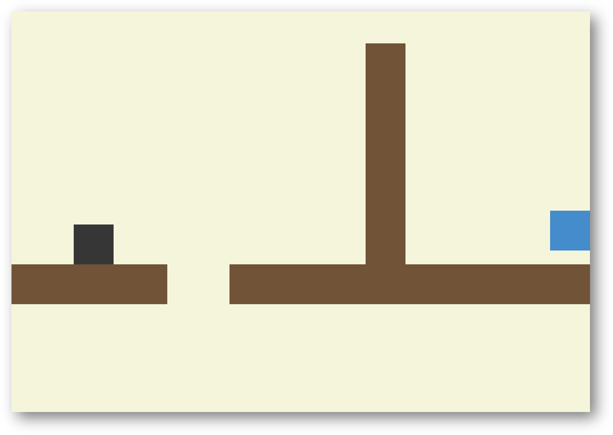
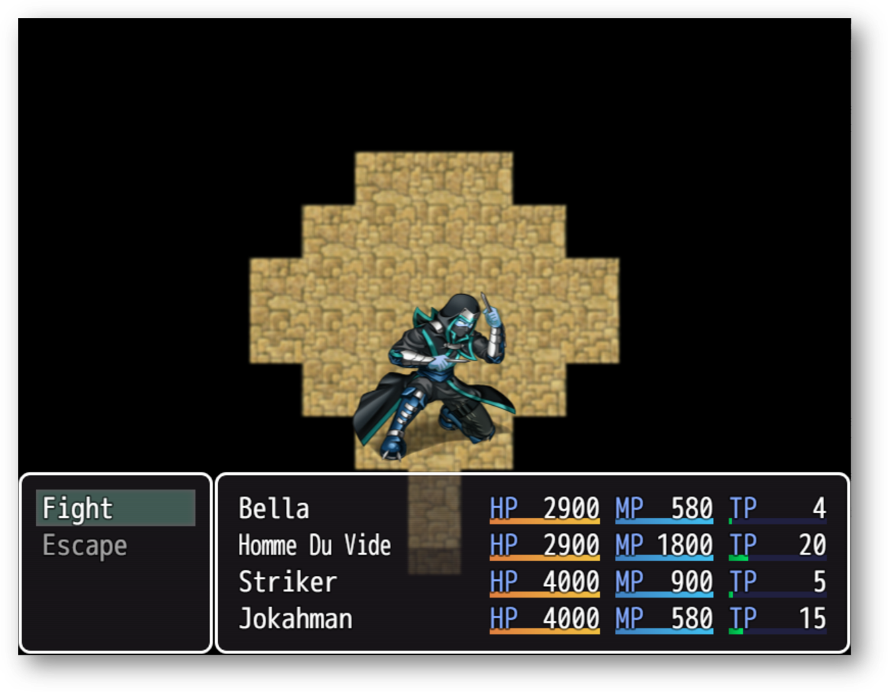
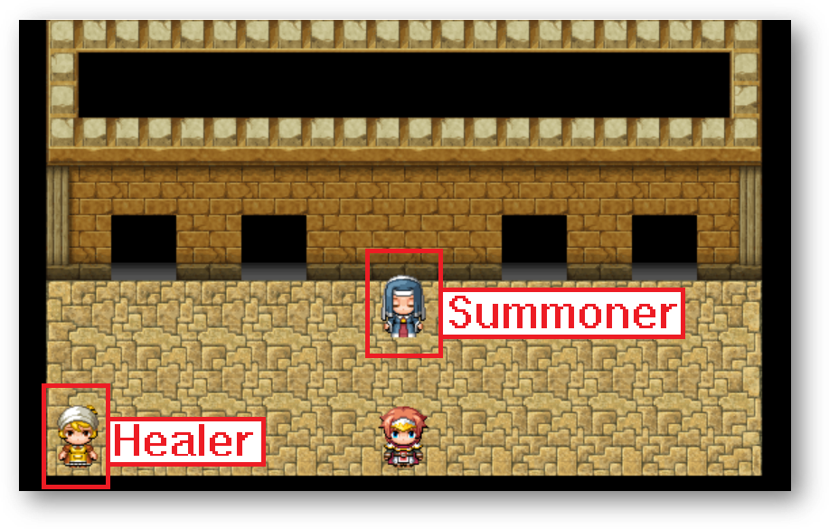

Info
What is this site?
The Bar of Cards offers a replayable experience with Solitaire with their small but fun game collection. The site has two games: a downloadable platform game BoC, and the online-playable RPG game Rare Brawl.
Cards?
It's clear that this site has a whole card theme alongside its obvious cafe theme. You can "win" cards through the game BoC. You receive the cards through the game as passwords, which you can enter in the game included in this website, Rare Brawl, to earn additional playable characters. You can also enter the passwords int he "password" page in the site to view the card assigned to the code.
BoC:
Synopsis:
The game is platformer where you play as Leon, a grey, sentient cube who lives their peaceful life jumping, climbing, and throwing coffee beans; these abilities proved to be useful when they suddenly end up in a strange planet. A strange force tasks our cube to finish 16 "levels". If our cube survives all these levels, they are allowed to return back to their home planet, living their normal, peaceful life.
Levels:
There are sixteen levels in this game. You can play any level in whatever order you like. You finish each level by touching that level's blue cube. The levels consists of challenging platforming, enemies, and even some puzzles.
This game was made with Gamemaker Studio 2.

Controls:
- Arrow keys - Move
- Space - Jump
- Space while on a wall - Climb
- V - Throw coffee bean
- C - Turn "C" blocks into transparent blocks and vice versa
Getting passwords:
Whenever you beat a level, you are rewarded with a password and a strange name. It is recommended to write the password down, alongside the name. They are important for the other game Rare Brawl.
Play:
You can download this game in the "Download BoC" page.
Rare Brawl:
Synopsis:
In this game you play as Bella, a courageous warrior who challenges some of the strongest warriors in his country, the four kings. He comes to the revelation that he can defeat these kings by himself. With the help the summoner, he gathers the strongest team of warriors to beat the kings.
Gameplay:
This game was built using RPG Maker MV, and thus shares a lot of mechanics with other games built by it; it thus shares the same battle system. Once you encounter an enemy, you are subjected to battle, in which your main four party members get the option to forcibly punch the opponent, guard, or use a magic spell. The magic spells aren't a finite recource, so be careful when to use them. Depending on what spell you used, they can support your party, weaken the opponent or inflict damage to the opponent (but sometimes more damage than what you would inflict if your punch them). When you guard, or sometimes when you attack or cast a spells, the party member gains TP, which you can use to cast spells you can normally not use. There are four enemies in this game, which you can fight in any order. Your party might be weakened after you defeated an enemy, so it is recommended to heal your party before you battle another by talking to the "healer".
Edit: Their is currently only one enemy you can fight
Controls:
- Arrow keys - Move
- Space - Interact
- X - Pause screen/Go back
Gathering party members:
To collect party members, you must talk to the summoner, who you can find in the game's first area. She will gladly inform you what to do. She'll list a bunch of warriors that you can add to your party. Remember the passwords you've gained from the other game, BoC? And the strange name that came with the password? Notice how each of those strange names are actually the names of the warriors you can get. First you must pick a warrior you want to summon, if you do, you're asked to fill in a password. You must fill in the password assigned to the warrior; if you do, that warrior is added to the party.
Play:
You can play this game in this site's "Rare Brawl" page.